NOTICE: This page needs a lot of sceen shots and is a work in progess, sorry!
Under normal circumstances, all necessary interactions for configuring and monitoring FGSMS can be performed using the FGSMS Web GUI. Alternatively, all of these interactions can be performed via web service interactions (See Using the FGSMS Web Services).
Information Assurance: Behind the scenes, all actions performed from the FGSMS Web GUI (OWG) are actually executed by the FGSMS web services. The OWG cannot communicate to the underlying database directly; this was done purposely. The web services act as the primary point of enforcing access control rules, both for accessing data and for making policy changes.
Browser Requirements:
The following sections detail the common actions that can be performed using the UI.
Once FGSMS is installed and running, the web interface can be accessed using the following URL template:
http(s)://localhost :(port)/fgsmsBootstrap
Depending on the authentication mode selected, you may be prompted for a username and password, or a PKI certificate.
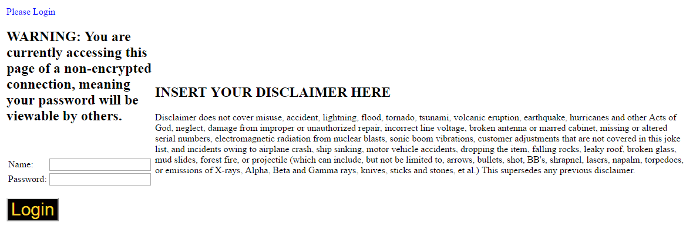
The disclaimer can be changed by editing the file login.jsp within fgsmsBootstrap.war.
Information Assurance Note – when operating with Username/Password authentication, the web gui passes the signed in user’s credentials along to the web server hosting the FGSMS web services. With PKI/CAC, the user’s identity is passed using headers.
The top portion of your browser should now contain the navigation bar. It contains links to access information and displays some critical information related to FGSMS and the services that are being monitored.
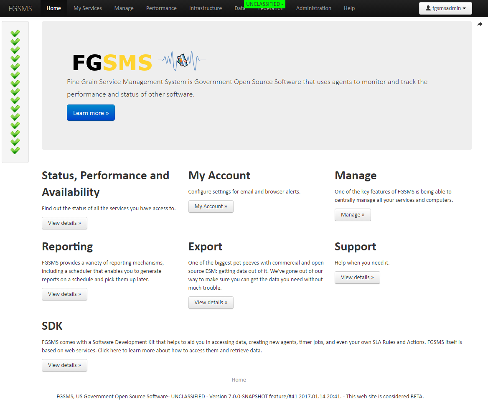
On the very top is the current classification level and caveats. (See [Increase the Security Classification of FGSMS]). Most people won’t have any need to mess with this, but it’s useful to remind users that information on the page has certain usage restrictions, caveats, etc. Common uses are “For Official Use Only” or “Confidential”.
Below that is the navigation menu which contains links to access all of the information collected by FGSMS, as well as configuration settings.
On the left is the quick status bar. This is a list of all services that you have access to, sorted by operating status (green is lower priority). This list also includes all FGSMS services and background processes. If everything is green, FGSMS, along with all your monitored services are online and responding. (great success!)
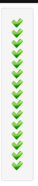
Move your mouse over it, it will expand to provide more information.
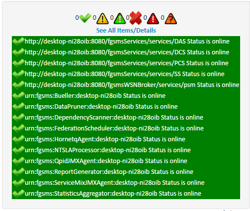
Should a service go offline or encounter a fault, the Operating Status message will change from green to red and OK changes to ERROR. Clicking on the “details” link will provide more information.
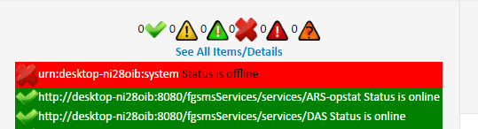
There are several different states a service can be in. The state is calculated by a combination of faults/error counts, service available (online/offline), and service level agreement violations (SLA). In addition, unknown is a status that is generally for when a service is just added and it’s operating state is not yet currently know.
Should an agent fail to check in, crash, or there’s a network outage, in some cases, the status indicators can change to a stale state. This basically means that we have data for the service, but it’s old which could indicate a problem.
In addition, there is a WARNING message if operating in non-SSL communication. These status messages are checked every time a page loads in FGSMS’s Web GUI and are not polled. In the center bottom, you may notice an orange box containing “X alerts waiting”. This represents Browser or GUI Based Alerting and represents the last 40 alerts that occurred in the last one half hour. Alerting is generally used for available or performance metrics.
Click on My Services. This displays the service list (again filtered by what you have access too). The list is sorted alphabetically but can be trimmed down to just the services that are offline or that have an issue. By default, when a new service is monitored, only FGSMS administrators can access them.
Each item is clickable to expand the view for more details.
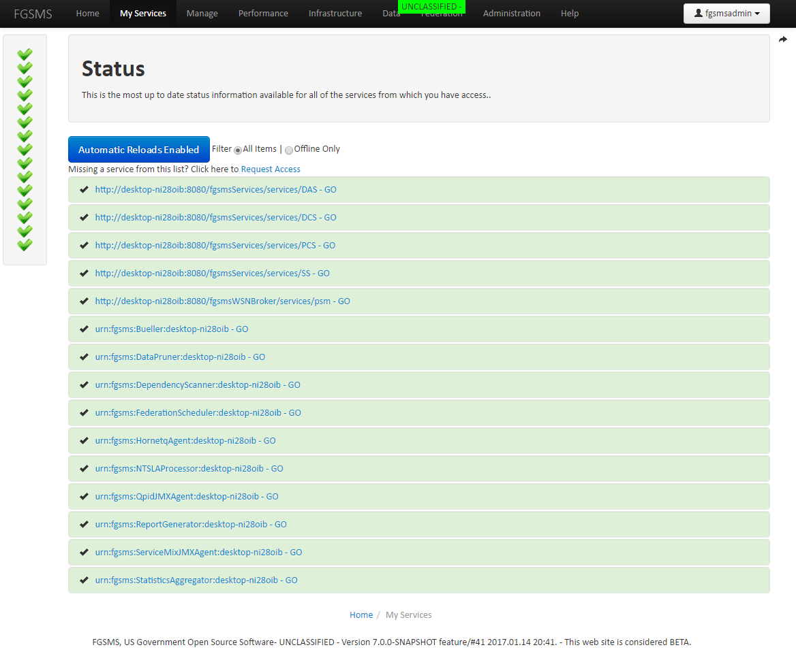
Pro tip: if you set the Display Name for all your services, this will become much more readable.
Provided that at least one FGSMS agent is installed and reporting correctly, there should be at least one service listed within the “My Services” screen. Under each monitored service is a number of links. Which links are displayed are dependent on the type of thing that is being monitored. The type correlates to the Policy Type which is discussed in the Service Policies section. The following describes where each link goes to what information can be obtained from them. Click on one of them to expand the view.
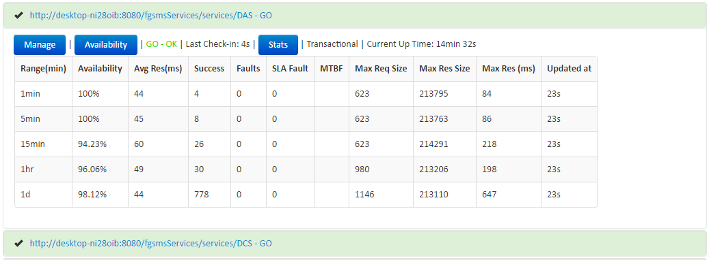
To continue the tour of the FGSMS web interface, click on “Manage” next to a particular service. This brings you to the Service Profile view.
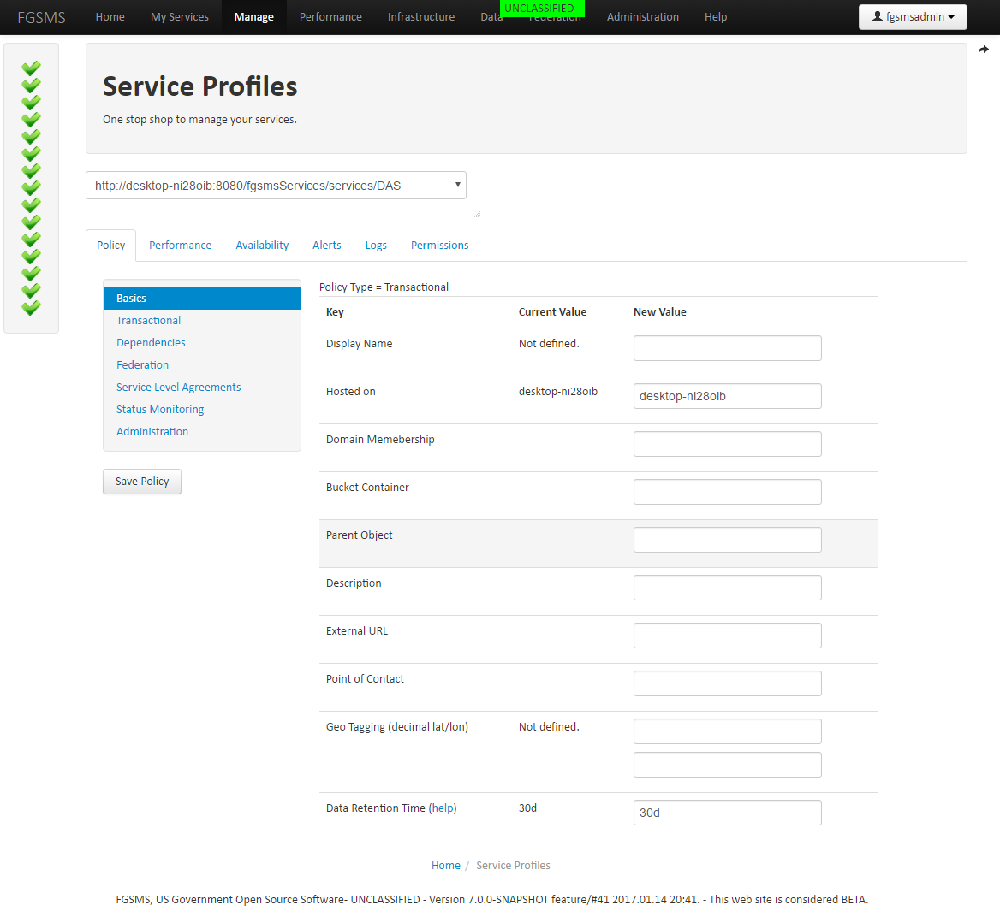
Above is the Service Profile editor. It provides access to not only per service configuration elements, but also access control rules, alertings, message logs, alerts and more. For now, let’s start with Service Policies.
FGSMS is a policy driven system. It is important to note that an FGSMS service policy is not based on WS-Policy, WSDM, or any other OASIS or W3C based standard. Although both specifications are appropriate for some tasks, service monitoring in the context of FGSMS is not one of them. Service Policies dictate a number of things within FGSMS and is the core data model used throughout the system. In starts with being able to uniquely identify a thing that is monitored. For web services, these are generally URLs. Non-web based services are generally notated by a URN. Each service policy is defined by a unique URI, which either be a Modified URL or some other type of URI
IMPORTANT
Original URL vs Modified URL FGSMS has the concept of Original URLs vs Modified URLs. The Original URL is typically used for connecting to something, whereas the Modified URL represents the original URL that has been modified to only include the hostname of the machine hosting the service. For example, using the provided FGSMS Agents, two URLs are recorded with each transaction. The first is the “Original URL”. For systems that are load balanced, this is typically something like https://myloadbalancedurl.mybusiness.com/service1, however the actual service resides on two different servers with the hostname of www1 and www2, making the Modified URL to the service https://www1/service1 and https://www2/service2.
The original URL can also contain things like “localhost” or an IP address. When an agent “sees” a message, it converts the request URL into the modified version which is more absolute and helps to distinguish different services within the FGSMS realm.
Service Policies can be one of the following types that represent the thing being monitored.
Each policy type provides additional settings and configuration parameters that extend from the common settings which are available for all policy types.
The service policy editor starts on the with the Basics. These settings that are available for all service policy types include the following.
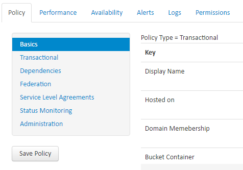
Each service policy type has additional configuration parameters that are specific to each policy type.
!When making changes, always remember to click the “Save Policy” button when finished.
The following sections identify each setting and what they mean.
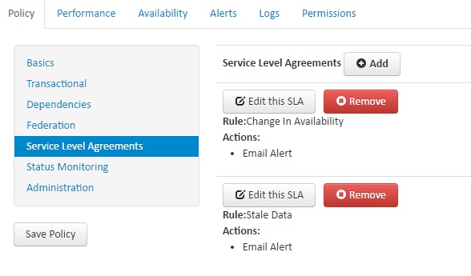
FGSMS has support for Service Level Agreements (SLA). In FGSMS, a SLA is defined as a performance or content based rule that causes some kind of action to occur. These rules fall into two different categories, Transactional or Non-transactional.
Architectural Note: A transactional rule is something that can be measured from one specific transaction. Non-transactional rules are measured over a range or group of transactions or availability data.
Transaction Rules (examples):
Non-transaction Rules (examples):
Why is this important?
It determines where the processing takes place and how often it is calculated.
To add a new SLA, click the Add button
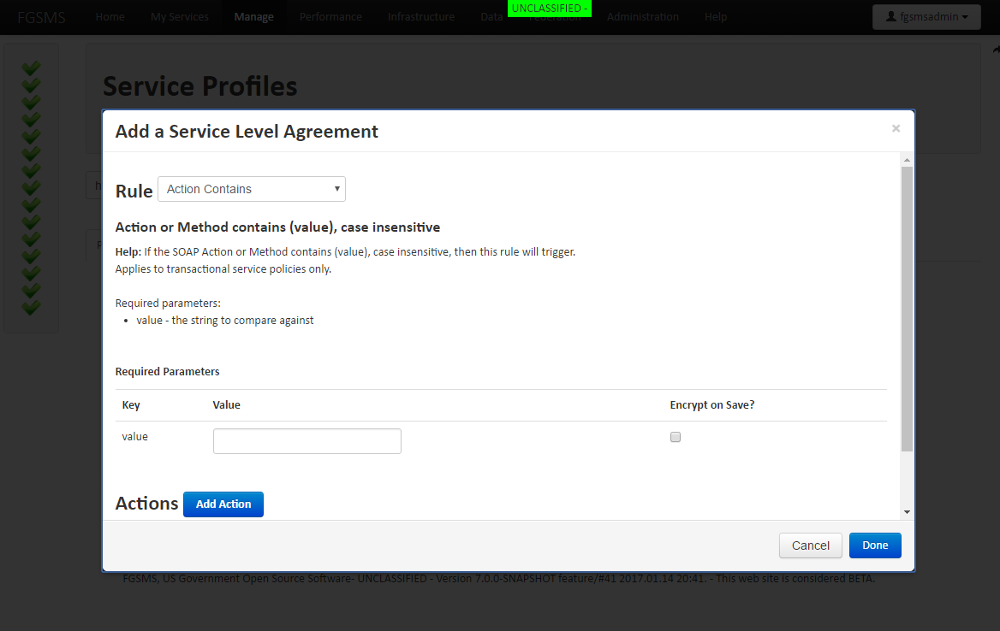
Current the available actions that are available are:
SLA Processing occurs at several different locations depending on the type of action.
Example SLA Setting
SLA’s are specific to the type of policy and thus the type of data that is recorded. It would not make sense to have a broker rule on a web service, and vice versa.
FGSMS supports the sharing of data through a number of different mechanisms. It is optional and will expose the selected data to one of several different “Federation Targets”. UDDI v3 compliant server, by appending tModels to endpoint binding templates. UDDI targets require that an administrator configure FGSMS’s UDDI Publisher to publish statistics to a single UDDI server or cluster. These settings are described on the Web GUI via Help > How do I?
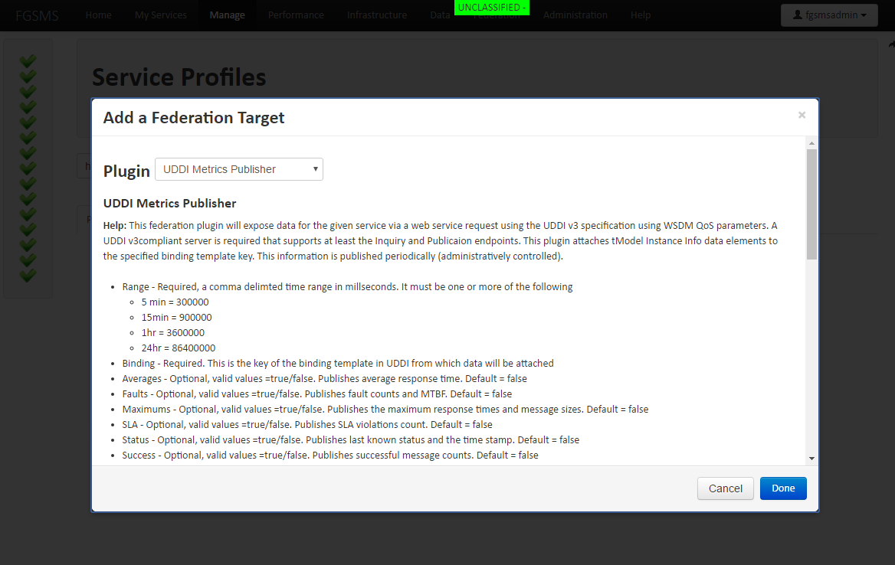 Figure 2 Example Federation Target
FGSMS’s agents track the availability of services via a variety of mechanisms. Some are self reporting and others use some built in mechanism to poll the server, such as an HTTP request. In some cases, the administrator may need to provide credentials for these requests. On the Status Monitoring tab, there are settings for setting the credentials for accessing the service.
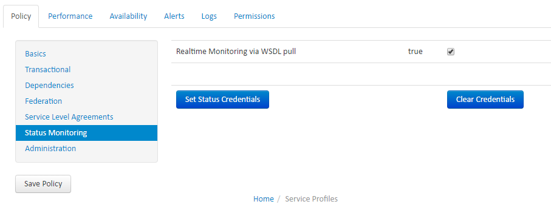
This is generally used for when an agent needs to authenticate to the service before being able to identify if it’s operational or not. In addition, Transactional Web Services have some additional features discussed in the next section.
The Set Status Credentials functionality is also used for JMX based agents such as Apache Qpid, ServiceMix and HornetQ.
Another note: HTTP based services will also use FGSMS’s certificate for authenticating in cases where by a PKI certificate is required.
If by chance the discovered URL for a service is incorrect or cannot be accessed for some reason, an alternate URL can be specified in the general tab.
The following sections detail what’s different about each type of policy and how to use them effectively. Transactional Web Services
This type of service policy is typically used for web accessible services, such as SOAP, REST, Servlets, or any web page.
Also note that from this page, you can view and change the permissions for this specific service, delete the service policy and delete the performance and availability data for this service.
When an FGSMS Agent sees a web service transaction, it firsts retrieves the web service policy for it. At a minimum, transactional web service agents will always record the following performance statistics:
Since web services are typically stateless, the only mechanism available to ascertain the operating system of them is to try and connect to it and perform some action. FGSMS does this via the Status Bueller.
Status Bueller – The Status Bueller connects to local or remote services and attempts to retrieve the WSDL document. If it cannot connect or a non HTTP 200 OK status message is returned, the service is flagged as unavailable.
In either case, it’s possible for the service to require authentication. For Username/Password scenarios, the Set Status Credentials and Clear Credentials settings can be used. For CAC/PKI scenarios, the Status Bueller uses the “defaults” grouping of settings. See General Settings for more information.
The settings you make as a service owner on the FGSMS policy can and will affect the performance characteristics of this service. The lowest overhead settings are as follows
| Parameter | Value | | — | — | |Record Request | False |Record Response |False |Record Both but only when faulting | False |Record Headers |True |User Identification |Empty, IP Address and Context Usernames are provided out of the box. This is only used for Http Headers or XPaths |Service Level Agreements | Has no affect on service performance, however certain SLAs require recording the request or response message for functionality (XPath) |Others | All other settings have no performance effect.
The reason for this additional performance penalty has to do with the conversion of XML to objects in memory. This process is called serialization or marshalling and is a relatively expensive process to perform in regards to CPU time.
In addition, when web services do not use SOAP Actions, agents will attempt to parse the XML message to determine what method is being invoked. This will also cause an additional delay. As a note to developers of web services, always use SOAP Actions. Many web service frameworks require it.
Agents, through service policies, can also record the web service transaction request and response XML messages. There are three options for recording web service transactions.
There are some limitations to how much information can be recorded. For performance and reliability reasons, the maximum amount of information recorded for a request or a response is 1MB, or roughly 1,024,000 characters of text. In most cases, this is enough information in order to identify a consumer and to record whatever auditing information is necessary. The amount of recorded data can be set, but only on a global basis (per FGSMS domain), up to the maximum of 1,024,000 bytes. This can be expanded by modifying the code for the PCS.
Information Assurance Note: Depending on the particular agent implementation, messages that have been encrypted on the wire may be transmitted to the FGSMS server using non-SSL communications. For message confidentiality, please ensure SSL is used from the agents to the FGSMS server. Message logs and associated HTTP headers are encrypted on disk using AES 256bit encryption.
Service policies do not just end with performance related data. On occasion, service owners may want to know who is executing their services. Often, this information is available via web service container log files, but is not always convenient to access. Through service policies, FGSMS agents can identity service customers through three ways:
Since there are infinite combinations of authentication and authorization practices, FGSMS allows system and service owners to defined multiple ways to identify consumers. They can be combined. After processing, the resultant set of user identities is accessible via the message logs as a semicolon delimited string. Implementation Note: When using XPath expressions to identify users, Java based FGSMS require the xpath query to NOT have XML Namespace prefixes and to NOT define any XML Namespaces.
.NET based agents require that the Xpath query contain all XML Namespace prefixes that that they are all defined.
Statistical Policies indicate that general statistics are available from the item being monitored as well as its availability information. There are no other settings available. Depending on the type of broker being monitored, the data available can included:
Statistical services have the following SLA Rules available to them
FGSMS comes with an Operating System Agent using the SIGARS API that provides monitoring on a variety of different platforms. The following data points can be recorded:
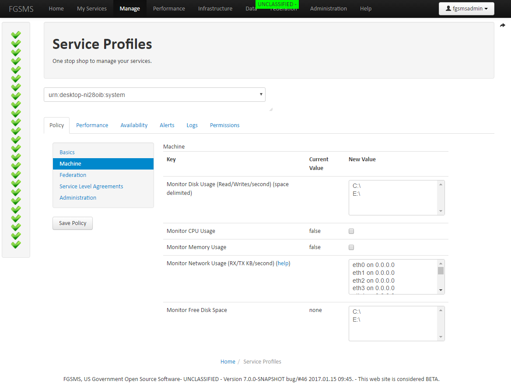
The following SLA rules are supported
Processes are defined as some kind of program or application that runs on a Machine. The following data points are supported
The following SLA’s are supported
FGSMS has a few global policies defined.
All of these policies can be defined via the Web GUI via Administration > Global Policies and Security Level, or via interactions with the Policy Configuration Service (PCS). The UDDI Publisher settings are now in General Settings section. In addition, a large number of default settings have been added, also in the General Settings section.
By clicking on “Transaction Logs” will bring you to the transaction log viewer. This page will enable you to see all recorded transactions from a web service/resource. This view can be filtered by selected “All Transactions”, “Show Only Faulted Transactions”, and “Show Only SLA Violations”.
This view can further be expanded by altering the request URL. Parameter: offset=x, allows you to page through the results (you can also click on “next” and previous” Parameter: records=x, allows you to change the maximum number of records rendered on the screen at a time. I’d suggest using a record count of less than 2000.
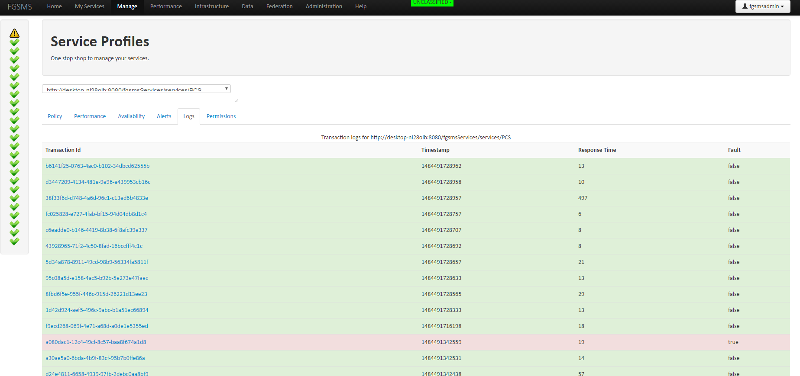
When scrolling down, you can see the total number of records that are available. Displayed is also the identity of the requestor, their IP address, the “action” of the message, response time and timestamp.
Under the column labeled “REQ/RES”, if the letters REQ are present in the row, this means that the actual request message was recorded and is available. RES is for the response. Click on “Details” link to display the specific transaction log viewer.
From this screen, the size of the message, the actual message, SLA fault information, the hostname of the server hosting the service, and the type of FGSMS agent that recorded the message are displayed.
There is a second way to view transaction logs: via Data > Web Service Transaction Log Search.
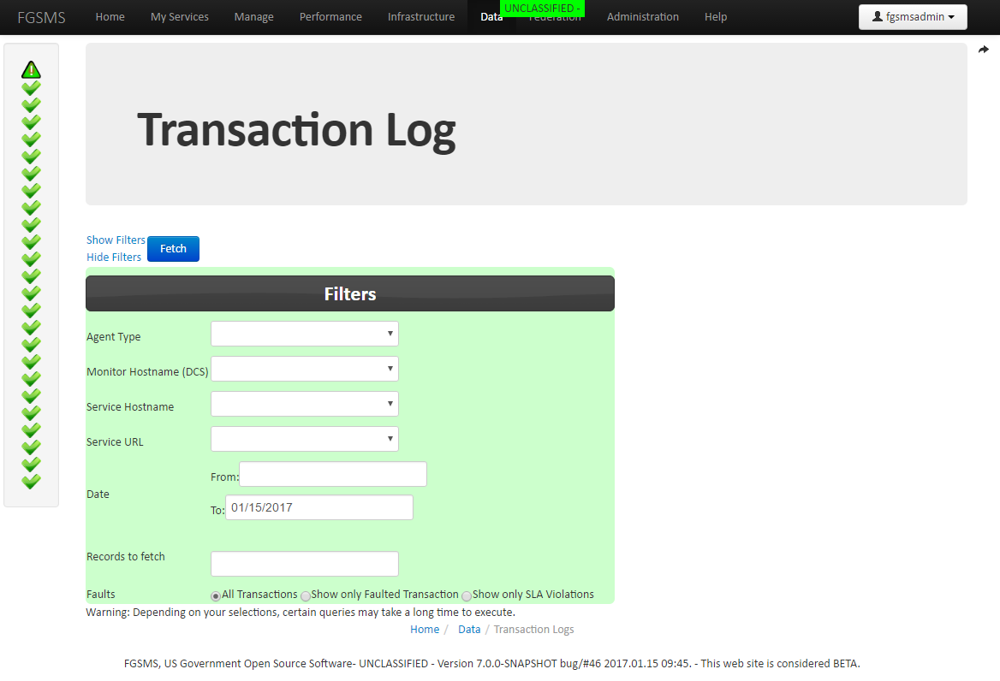
This screen will let you fine tune a transaction log query to return transaction log information. The minimum fields required is a date range and the number of records to return. All results are sorted by newest record first (descending). Click on “Fetch” to fetch the corresponding records. The filter panel will automatically hide after clicking on “Fetch”. To change the query, simply click on “Show Filters”.
FGSMS includes a Web GUI which has the ability to display commonly views of the available data in near real time. Also included with FGSMS is an HTML report generation capability.
Utilizing the Reporting Service, a zipped HTML report can be generated. This report is based off of user input that defines which services, report types and a date range to further scope data. Optionally, “All Services” and “All Report Types” can be selected.
Important note: when selecting data for reporting, only select the data that you need. When requesting large data sets, you may experience timeouts or exceptions. If this occurs, reduce the data set or use the Automated Reporting Service.
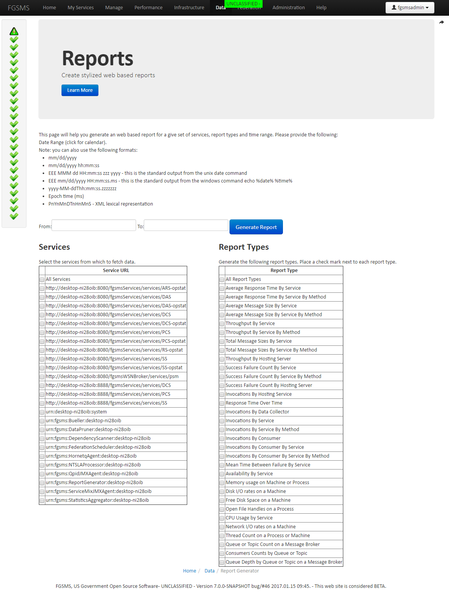
Customization Tip: Reports can be customized by modifying the included HTML template and cascading style sheets (CSS). There is currently no support for including custom images such as logos via an embedded image, but it will be considered for future iterations. As a work around, a web facing logo or graphics file can simply be referenced within the template. Within the reporting.jar file, edit Header.txt and Footer.txt
Information Assurance - While anyone who can access the Web GUI can generate a report, only the service data that the user has access to can be returned. The reporting service merely ignores requested data that the user does not have access to. The following is a few screen captures from an example report.
The Reporting Service also allows you to export data to a Comma Separated Value text file. The file is actually delimited by the pipe symbol “|”. This can easily be imported into Microsoft Excel or other spread sheet applications.
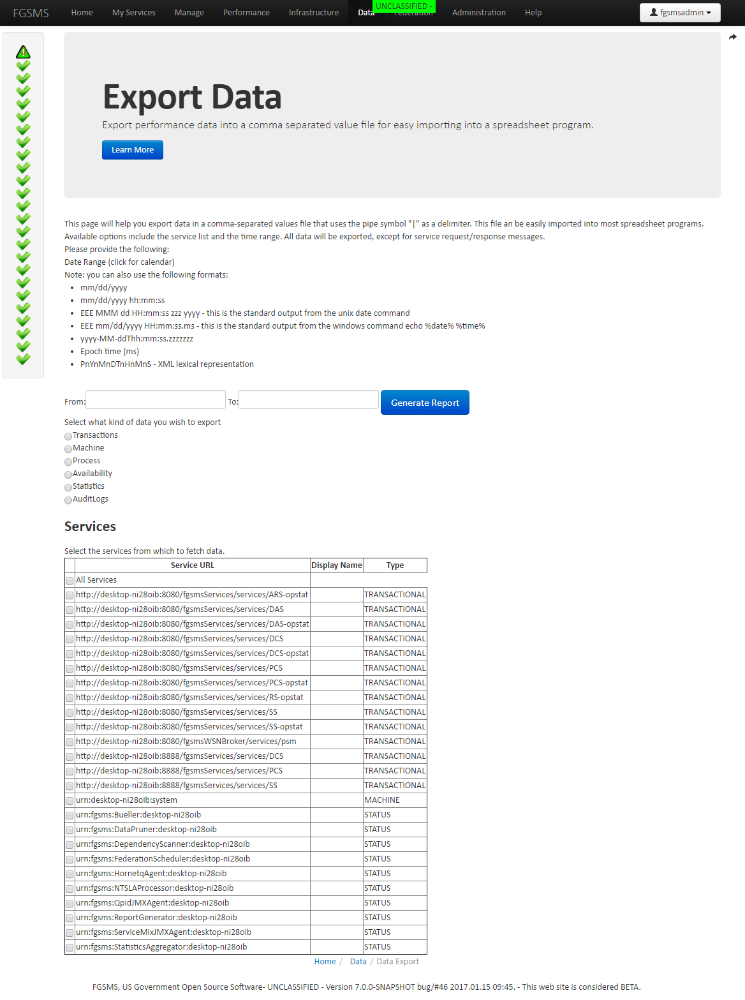
A few things thing to keep in mind with exporting data. * Data is not removed from the database * If you select a type to export data and there is no data for that type of service, no data will be returned.
The Automated Reporting Service (ARS) is a number of components that allows you to define reports (either HTML or CSV export) that are to be automatically generated on a schedule. Once a report has been generated, you will be notified via one or more of the notification systems. Reports can then be picked up at your leisure. They are stored in the database. Once a report is downloaded or is no longer needed, please remove it to save disk space.
To access the ARS, select Reports > Scheduled Reports.
Under the Infrastructure tab of FGSMS’s web interface, are five links (as of RC6), Service Hosts, Data Collectors, Message Brokers, Agents, and Domains/Servers.
The FGSMS Data Collector Service (DCS) is the most fundamental and most important of all of the FGSMS services. Without it, data simply cannot be collected. Therefore it is important to know how much work each copy of the DCS is doing in relationship to others. The Data Collectors page lists all known data collectors as well as a percentage of transactions recorded by this service host.
TODO image
The Service Host page gives you a list of machines by hostname from which transactions have been recorded. This also includes transactions monitored from Client agents, meaning that client machines can also be listed here.
TODO image
Clicking on the “View” performance link will provide some general stats for this specific service host.
FGSMS supports monitoring Message Brokers. This is different than the standard “request/response” pattern seen with most SOAP/XML messages. The message broker also typically does not have the capability for FGSMS to “see” individual transactions but can obtain general statistical information as reported by the broker.
FGSMS ships with two AMQP agents for Apache Qpid/RedHat MRG which report back to FGSMS statistical data on Message Queues and Exchanges as well as the online status of the broker. The following screen shot shows example data captured by both AMQP JMX and Python based agents.
TODO image
By clicking on the URI of the broker, additional data is displayed by Queue/Exchange name.
TODO IMAGE
By clicking on “Agents”, a listing of all recorded FGSMS agents will be displayed. This lists only the agents that are capable of reporting back data on a transactional basis (this implies that message brokers are not visible) and only agents that actually have reported back data will be displayed.
The Domains/Servers tabs gives you the ability to monitor specific processes or components running on a machine with an OS Agent running on it. This allows administrators to drill down from a domain to a server. It displays machine characterizes and enables administrators to start monitoring specific items on a machine.
TODO image
To monitor a specific process on this machine, click on “Running Processes” tab, then click on “Monitor this Item”.
The General Settings section of FGSMS is used to set general settings that control most aspects of the FGSMS server components, alerting functionality, default settings, SSL key stores and generally, any other setting that is needed.
All of these settings are defined and are accessible in the browser via Help > How Do I… under the heading of What settings are available for me to tweak?
General Settings also provides a single place to access configuration settings for all FGSMS components excluding configuration for the Web GUI itself.
Global Administrators can modify the configuration of each instance of FGSMSBootstrap.war (the Web User Interface) via Administration > Connections.
This web page provides basic functionality for configuring the web site’s features remotely. It essentially allows you to modify on the config.properties file within FGSMSBootstrap.war.
FGSMS’s supports subscribing to SLA email alerts from the browser. Alerting is available for all SLA types.
To register your email address click on Settings > My Account To subscribe to alerts, click on Settings > Alerting
FGSMS’s web GUI supports alerting right to the browser. Alerting includes:
To enable alerts, click on Settings > Enable Alerts. This setting is set in a cookie on your machine. If moving to another machine, it will have to be re-enabled.
TODO image
By default, the refresh interval is set for 10 seconds. To adjust it, Settings > Alert Interval, then save. This feature requires both the Status Bueller and the Status Service. JMS, AMQP, WS-Notification, and more FGSMS can send alerts using the WSDM specification to anyone of the mentioned message brokers. Web Services Distributed Management (WSDM) is an OASIS specification. The specific message type is the Management Event message. The following is an example of what the messages look like after being delivered.
<ns4:managementEventType xmlns:ns4="http://docs.oasis-open.org/wsdm/muws1-2.xsd" xmlns="http://docs.oasis-open.org/wsdm/muws2-2.xsd" xmlns:env="http://schemas.xmlsoap.org/soap/envelope/" xmlns:ns2="http://docs.oasis-open.org/wsdm/mows-2.xsd" xmlns:ns3="http://metadata.dod.mil/mdr/ns/netops/esm/qosm" xmlns:ns5="urn:us:gov:ic:ism:v2" xmlns:ns6="http://www.w3.org/2005/08/addressing" xmlns:ns7="http://docs.oasis-open.org/wsrf/rp-2" xmlns:ns8="http://docs.oasis-open.org/wsrf/bf-2" ReportTime="2012-03-12T12:10:20.134-04:00"> <ns4:EventId>urn:beeb1156-3b8e-41bb-8844-41f568418961</ns4:EventId> <ns4:SourceComponent> <ns4:ResourceId>http://FGSMSdev1:8180/TestServices/TestService</ns4:ResourceId> </ns4:SourceComponent> <Situation> <SituationCategory xmlns:xsi="http://www.w3.org/2001/XMLSchema-instance" xsi:type="AvailabilitySituation"/> <SituationTime>2012-03-12T12:10:20.134-04:00</SituationTime> <Severity>4</Severity> <Message xml:lang="english">All Faults</Message> </Situation> </ns4:managementEventType>
Please see the Help > How Do I? > What settings are available? Section to how to configure each one.
Alerts can also be sent via Log4j Loggers which can be mapped to a wide array of different targets, such as the Windows Event Log, Syslog, UPD Loggers, etc. Details for configuring Log4j is located within the Web GUI under Help > How Do I?
FGSMS’s Web GUI supports basic functionality for retrieving data from a UDDI Server, which can include data published by FGSMS or any other entity. This provides basic read only access to the data. It is recommended that you use Apache jUDDI user interface as it has more advanced features.
UDDI Browser is supported on the main “Federation” menu in FGSMS as well as on the “Performance” viewer and on “Service Profile” pages.
Configuration:
This is set via the fgsmsBootstrap.war properties file named “config.properties”. If no settings are configured, UDDI features from the GUI will be disabled. More information is available under Help > How Do I? Configure the UDDI Server associated with the GUI.
TODO this needs updating
FGSMS’s Web GUI has two dashboards that support automatic updating, the “Home” page, and the “Performance” page. The Home page is automatically updated via Ajax/Javascript and references the cookie setting, AlertInterval. This can be adjusted in the settings page. Within the Performance page, simply click on the link for the dashboard. It is preset to display data over the last 24 hours.
TODO image
Required Permission: Global administrator or global auditor roles
FGSMS has auditing logs for access to and modification of data. This log is stored in the database indefinitely. Audit logs can be viewed by users with global administrative privileges only via the web interface or via service invocation.
Audit logs can by clicking on Administration, then Auditing. 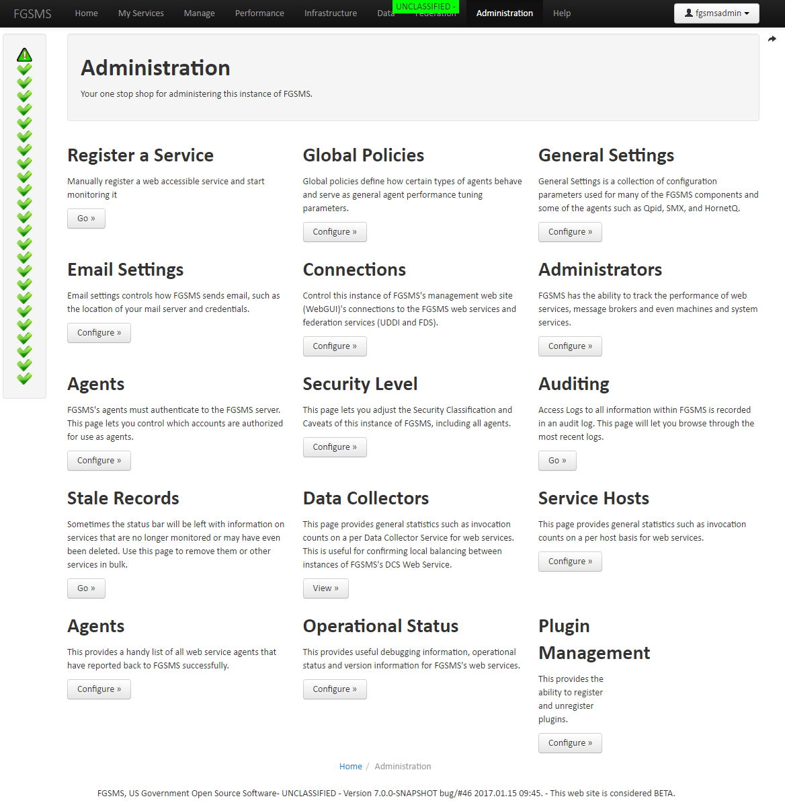
Audit logs can also be exported from the database using the Reporting Service or the Data Export function from the Web GUI.
The SDK covers some aspects of reskinning or theming the user interface.
Architectural Note: By default, when an agent retrieves the policy from the PCS and the policy does not already exist, a policy is automatically created and stored in the configuration database. This is an automatic registration process is only triggered when a service transaction is monitored. In other words, if a service is never executed, FGSMS doesn’t know it exists. By default, only global administrators have read access to performance data and write access for the service policy for newly discovered services. The default policy for “new” services can be configured by altering the PCS’s configuration.
To view the general performance statistics for a service, click on “Performance” from the top navigation bar.
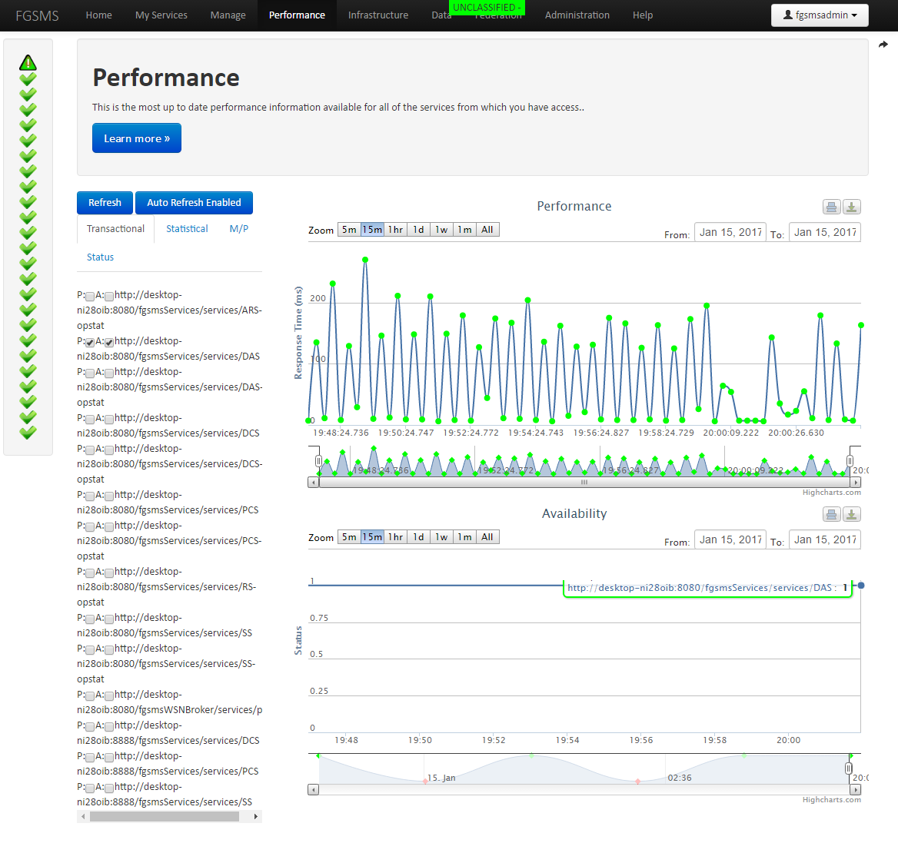
From the My Services page, locate the URI represent the Process you wish to view, then click on Performance.

For configuration SSL, trusted certificate issues must be defined and stored in a Java Key Store JKS. By default, the FGSMS Server uses the key store located at /server/default/conf. Any password changes to this file requires the following changes. When using CAC/PKI authentication, these same files will need to be modified.
FGSMS’s agents use embedded configuration information stored within FGSMS.AgentCore.jar. This file contains all of the trust stores and key stores used for secure communications, as well as the passwords for these files. Any changes to trust store, key store, or credentials require the following changes
To increase the security classification of FGSMS, access the web interface. From the drop down menu, select Administration > Security Level
This setting is stored in Configuration Database and is broadcasted to agents via PCS. All services read the current level from the db. The web interface also gets the current classification level from the PCS. Colors and wording are adjusted as per the IC-ISM-v2.xsd file provided by Intelligence Community Security Markings, available at www.niem.gov.